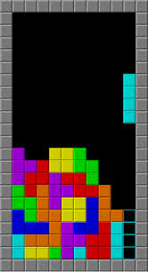

Tarea 1
Desarrollo de un videojuego tipo Tetris utilizando tecnologías web como HTML, CSS y JavaScript. En este proyecto se implementaron estructuras de control, manejo de eventos del teclado y lógica de programación para la generación, rotación y desplazamiento de piezas dentro de una cuadrícula. Además, se trabajó en la detección de colisiones, eliminación de líneas completas y actualización dinámica del puntaje del jugador. Este proyecto permitió fortalecer habilidades en programación lógica, manipulación del DOM y diseño de interfaces interactivas, así como comprender la importancia de la optimización del código en aplicaciones en tiempo real.
👉 Jugar Tetris
Tarea 2
Diseño de un modelo tridimensional utilizando la plataforma Tinkercad con el objetivo de preparar un objeto para impresión 3D. Durante el proceso se aplicaron conceptos de modelado sólido, medidas precisas y ensamblaje de figuras geométricas básicas para construir un diseño funcional. Posteriormente, el modelo fue exportado en formato adecuado para impresión y se analizaron aspectos como la orientación de la pieza, el uso de soportes y la optimización del material. Esta actividad permitió comprender el flujo completo desde el diseño digital hasta la fabricación física, así como las limitaciones y consideraciones de la impresión 3D.

Tarea 3
Desarrollo de un diseño orientado al corte láser mediante el uso de Tinkercad, en el cual se diseñó un cubo ensamblable a partir de piezas planas. Se trabajó en la precisión de medidas, tolerancias y encajes para asegurar que las piezas pudieran ensamblarse correctamente después del corte. Este ejercicio permitió comprender el funcionamiento delcorte láser, así como la importancia del diseño en dos dimensiones para la construcción de objetos tridimensionales.También se reforzaron conceptos de diseño paramétrico y planeación de ensamblajes.

Tarea 4
Diseño y construcción de un mecanismo CNC con el objetivo de simular el funcionamiento de un elevador. En este proyecto se integraron conceptos de mecánica, control de movimiento y estructuras, utilizando componentes que permiten transformar el movimiento rotatorio en movimiento lineal. Este proyecto fortaleció la comprensión del funcionamiento de máquinas CNC y su aplicación en procesos de automatización y manufactura.